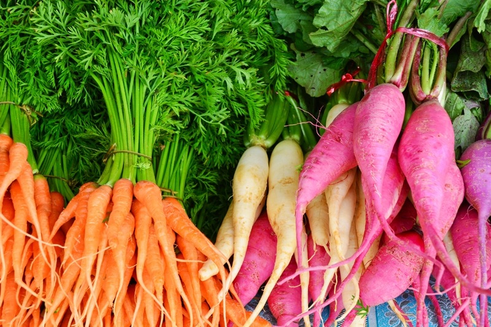
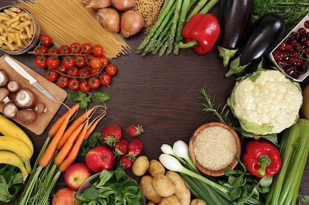
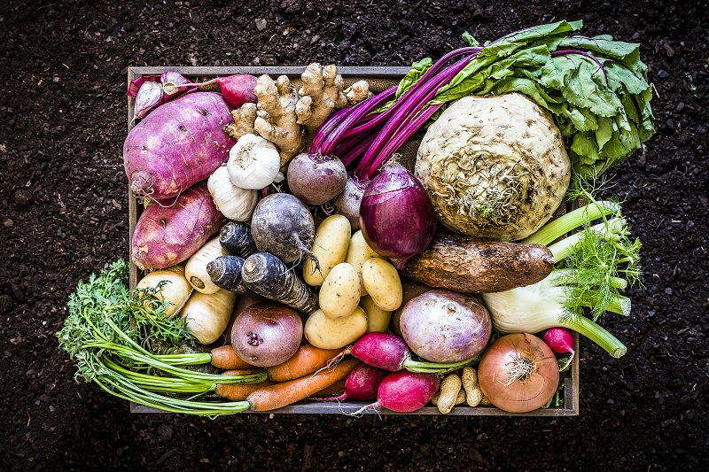

Ogólne podsumowanie
Wtedy należy dogłębnie przeanalizować, czy jesteśmy w stanie utrzymać ją długoterminowo. Jeśli nie, to zdecydowanie lepiej przejść na którąś z odmian diety wegetariańskiej. Trzeba pamiętać, że dieta powinna być dopasowana do nas, a nie my do diety.

Zwolennicy klimatarianizmu twierdzą, że dieta ta ma na celu zmniejszenie emisji gazów cieplarnianych odpowiedzialnych za zmiany klimatyczne poprzez zmniejszenie spożycia produktów produkowanych w zakładach emitujących właśnie te niebezpieczne dla środowiska gazy. Dobrze zbilansowana dieta klimatyczna będzie zatem dobra nie tylko dla nas samych, ale i przyczyni się do poprawy jakości środowiska :)

- odpowiednią ilość białka, tłuszczy i węglowodanów
- niezbędne witaminy i minerały; jeśli nie ma możliwości dostarczenia ich z dietą, należy rozważyć suplementację
- ograniczoną ilość żywności przetworzonej oraz tłuszczów nasyconych
- wystarczającą ilość płynów, głównie wody.
